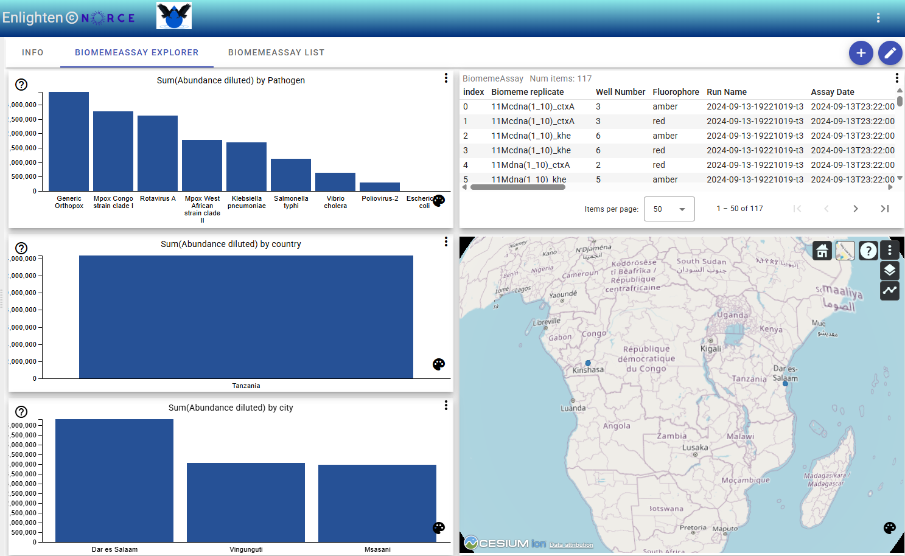
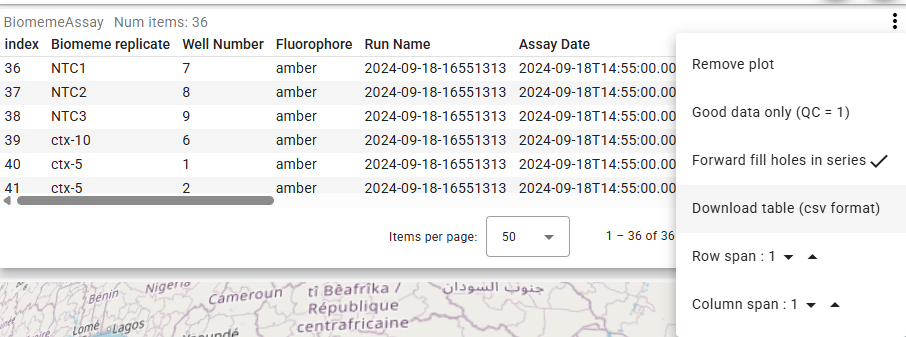

To use the enlighten feature for making selections in bar charts (Pathogen, City, Country) and view abundance at different levels:

Open the Dataset Explorer
Select a dataset that matches the template (e.g., using the open_in_new icon).
Locate the Bar Charts
Find the bar charts labeled by Pathogen, City, or Country in the explorer view.
Use Enlighten for Selection
Click on a bar in any chart to activate enlighten. This will highlight your selection and update related charts and tables to show abundance data filtered by your choice.
Compare Levels
Switch between Pathogen, City, and Country charts to view abundance at different aggregation levels. Each selection refines the displayed data accordingly.
Notes:
- Enlighten enables interactive exploration and comparison across different categories.
- Selections are reflected in all linked visualizations and tables.
- To reset, deselect the highlighted bar or in the overflow menu choose “Clear all filters”.
After making a selection in the bar charts, you can download the filtered data as a CSV file:
Go to the Table View
Switch to the table view where your filtered selection is displayed.
Open the Drop Down Menu
Click the drop down menu (often shown as three dots or an arrow) above the table.
Select “Download table (csv format)”
Choose the “Download table (csv format)” option to export the currently filtered data.

This allows you to save and share your selected subset for further analysis or reporting.